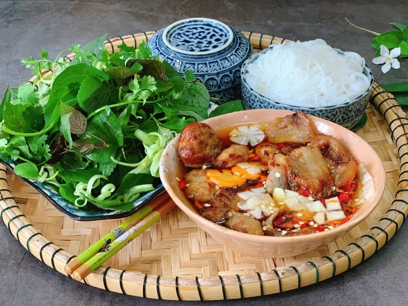

Bun cha

This is Bun cha, one of the most well-known dishes in Vietnam.
Ingredients
Bún tươi sợi nhỏ: 1 kg.
Thịt ba rọi rút sườn: 500 gram.
Thịt nạc dăm đầu mềm hoặc thịt nạc vai xay nhuyễn: 500 gram.
Cà rốt, su hào, củ cải trắng: mỗi thứ 1 củ.
Steps
Sơ chế nguyên liệu
Làm nước mắm
Thành phẩm